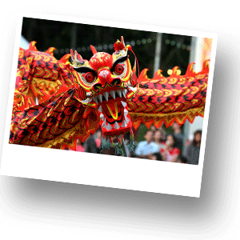

Основные праздники Таиланда
1 января – Новый год.
Конец января – начало февраля – в день полнолуния в стране отмечается Китайский Новый год. Все магазины и учреждения закрываются на три дня. Вокруг буддистских храмов проходят процессии.

В январе в Чиангмай проходит праздник зонтиков. Этот красочный фестиваль проводится в честь мастеров, изготавливающих прекрасные чиангмайские зонты. Проходят парады, презентации и демонстрации мастерства.
В первые выходные февраля в Чиангмай проходят цветочные парады. Процессии проходят именно тогда, когда северные цветы полностью распускаются. Это время, когда прохладный воздух наполняют пьянящие ароматы. Проводятся выставки, но главное событие – грандиозная цветочная процессия с марширующими оркестрами и красивыми чиангмайскими женщинами.
В феврале проходит Макха Пуджа – один из наиболее важных буддийских праздников. Он был установлен в честь важного события: 1250 учеников пришли к Будде в этот день, чтобы услышать его проповедь. По всей стране проходят торжественные процессии со свечами.
Февраль это еще и сезон летучих змеев. В Санам-Луанге, недалеко от Ват-Пра-Кео, дети запускают змеев разнообразных форм и расцветок, в дети старшего возраста и взрослые соревнуются в старинной забаве "бой летучих змеев".
В начале апреля в Мэхонгсоне, Чиангмае и по всему северному Таиланду проходит праздник Пой Санг Лонг. Этот праздник отмечается в течение трех дней. Яркие процессии проходят в честь послушников, принимающих монашество.
6 апреля – день основания правящей династии Чакру в 1782 г. Единственный день в году, когда открываются двери королевского пантеона в Большом королевском дворце . Тайцы идут в пантеон с цветами и ароматными палочками.
12 - 14 апреля празднуется традиционный тайский Новый год – Сонгкран. Один из наиболее значимых праздников в году. «Сонгкран» означает вращение земли вокруг солнца. На праздник Сонгкрана собирается вся семья. Тайцы относятся к семье с большим уважением. Ранним утром семья отправляется в храм, где преподносит монахам изысканные блюда. Затем в своем доме каждый член семьи поливает семейную статуэтку Будды чистой водой с лепестками роз и жасмина. Третья часть празднования – дань уважения старшим членам семьи. На их руки также льют живительную воду. Затем начинается праздничный ужин. В заключение произносится общая молитва о предках и усопших наставниках.
Люди обливают монахов водой, украшают образы Будды свежими цветами, очищают дома, символизируя очищение и возрождение. Водой обливают всех, принимающих участие в празднике. Вода, проливаемая повсеместно, как сущность всего живого, должна принести благодать. Все весело поливают друг друга водой и обсыпают пудрой или душистым тальком. Молодежь стоит возле дорог или разъезжает на пикапах с бочками воды и поливает прохожих.
Начиная с 19 апреля, проходит традиционный фестиваль в Паттайе. Яркий праздник, с пивом, конкурсами красоты, водными гонками. В целом за несколько дней можно увидеть все, чем славится этот знаменитый курорт.
1 мая – День труда.
5 мая – День коронации ныне здравствующего Короля.
В начале мая в Бангкоке проводится Церемония королевской борозды. Во время церемонии священным быкам предлагают различные виды зерна. В зависимости от того, что они выберут, провидцы предсказывают будущий урожай риса.
В мае отмечают Лой-Руа (праздник морских цыган Пхукета) – праздник полнолуния. Рыбаки пускают в море бамбуковые лодки, чтобы избавиться от несчастий.
В июле проходит Асалаха Пуджа – общенациональный праздник полнолуния, в честь первой проповеди Будды первым пяти ученикам.
12 августа – День рождения королевы Сирикит. Нынешняя королева считается самой красивой в истории Таиланда, ее день рождения – очень яркий праздник по всей стране.
В сентябре отмечается китайский лунный праздник, который носит общенациональный характер. Отмечается в ночь полнолуния восьмого лунного месяца. В честь богини Луны зажигаются фонари.
В сентябре на реке Чао Прайя можно наблюдать ежегодные международные парусные гонки под Мостом Короля Рамы IX.
На острове Пхукет в середине сентября проходит праздник растительной пищи или, как его еще называют, Пхукетский вегетарианский фестиваль.
Также, в середине октября можно стать свидетелем красочного действа традиционных буйволиных гонок в Чонбури. Буйволов выпускают на арену, а местные жители делают на них ставки и безумно веселятся.
Начало ноября знаменуется красивейшим тайским праздником – Лой Кратхонг. Все тайцы делают маленькие кораблики (кратхонги) из листьев банана, устанавливают на них зажженные свечи и небольшие фигурки богов, а потом пускают по рекам и каналам.
В третью неделю ноября проходит шоу слонов в Сурине. Это праздник в честь самого знаменитого животного Таиланда. Слоны играют в футбол, перетягивают канат, даже боксируют. О размещении лучше позаботиться заранее, поскольку гостей на празднике всегда много.
Конец ноября – начало декабря время воспоминаний о грустных событиях Второй мировой войны.
3 декабря в Бангкоке жители и гости столицы наслаждаются необычным цветовым праздником. В этот день королевские полки в яркой форме проходят перед Королем по Королевской площади, напротив старинного здания Национальной ассамблеи.
5 декабря весь Таиланд отмечает день рождение Его Величества Короля. По всей стране проходят пышные процессии в честь дня рождения монарха.
10 декабря – День конституции.
В начале декабря проводится Пхукетская регата на Королевский кубок. Гонка яхт на длинную дистанцию. Организуется на побережье Найхарна.
Чиангмайская зимняя ярмарка проводится в конце декабря. В программу включены различные шоу, конкурс красоты «Мисс Чиангмай» и продуктовая ярмарка на муниципальном стадионе.
31 декабря – предновогодний выходной.
Если государственные праздники выпадают на выходной день, то следующий день также считается нерабочим.